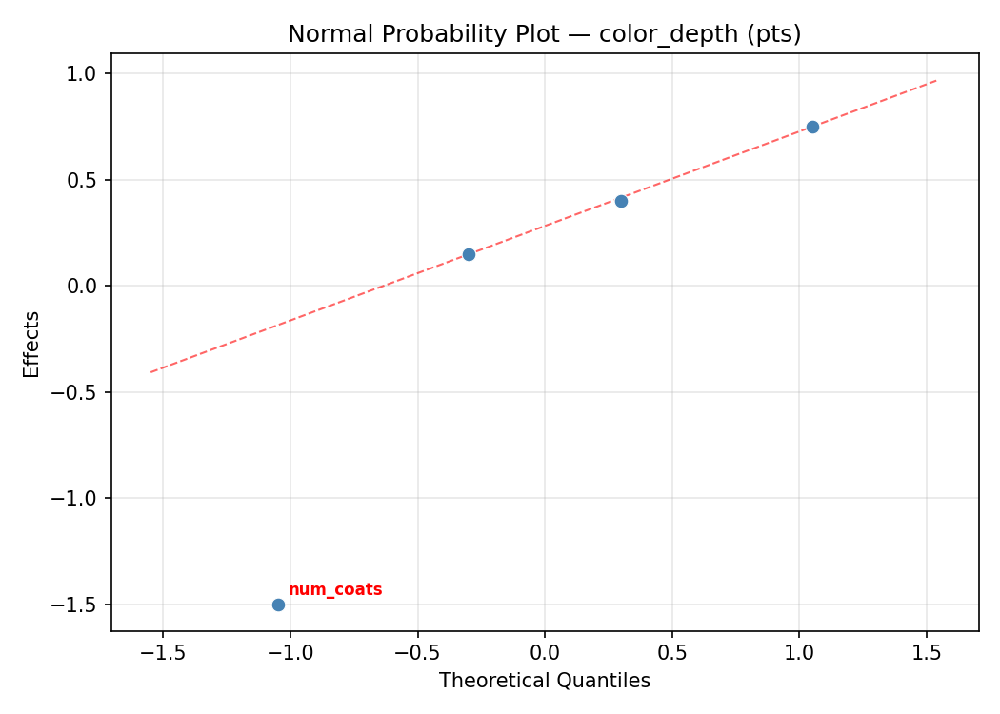
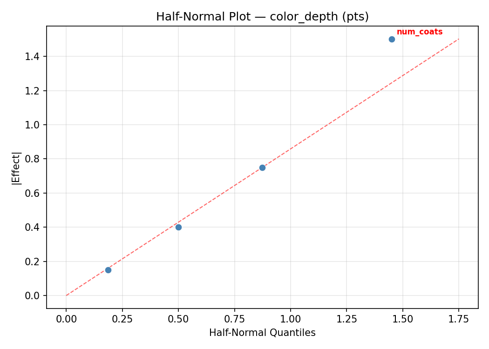
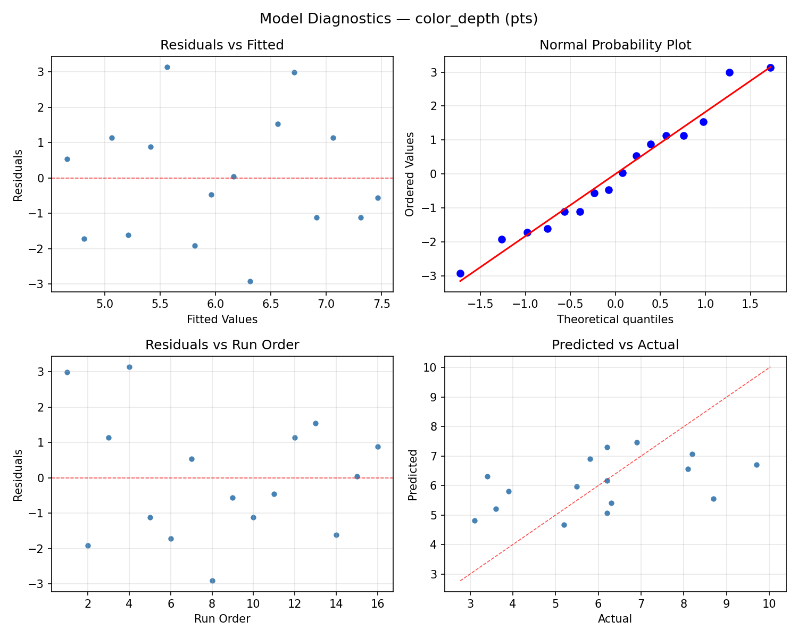
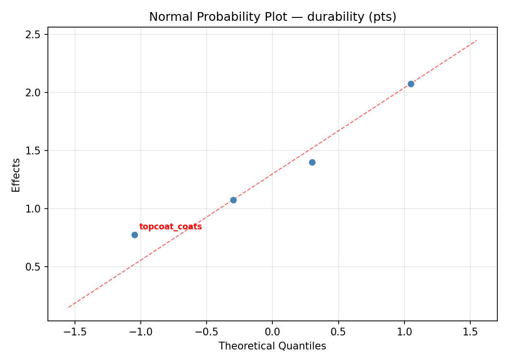
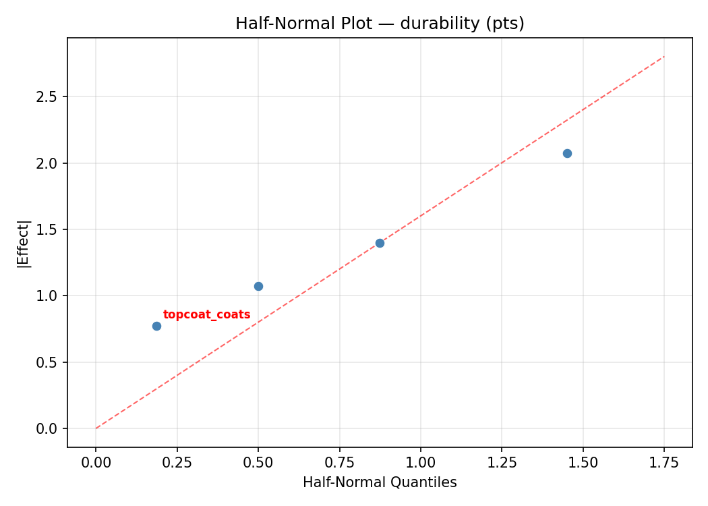
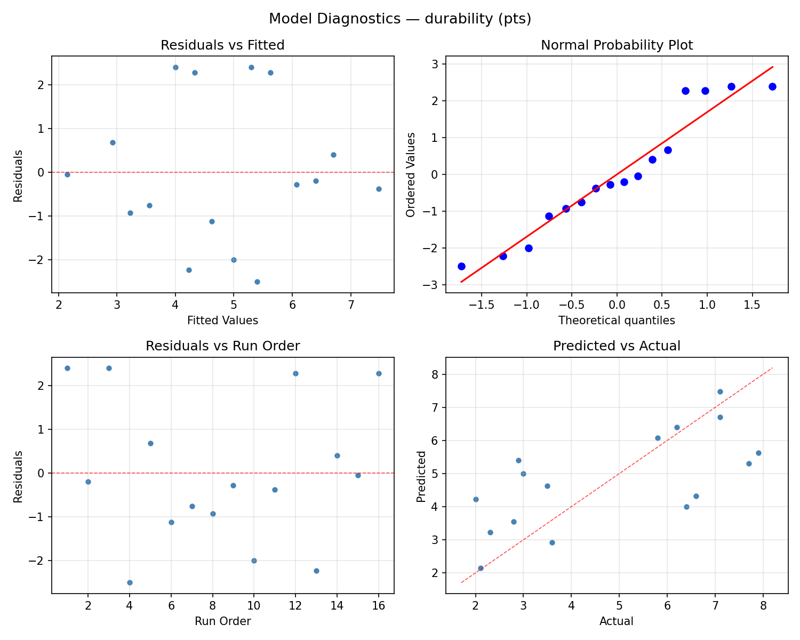

Summary
This experiment investigates wood stain & finish. Full factorial of stain dilution, number of coats, drying time between coats, and topcoat type to maximize color depth and durability.
The design varies 4 factors: stain dilution (%), ranging from 0 to 50, num coats (coats), ranging from 1 to 3, dry hrs (hrs), ranging from 2 to 24, and topcoat coats (coats), ranging from 1 to 3. The goal is to optimize 2 responses: color depth (pts) (maximize) and durability (pts) (maximize). Fixed conditions held constant across all runs include wood type = oak, stain color = walnut.
A full factorial design was used to explore all 16 possible combinations of the 4 factors at two levels. This guarantees that every main effect and interaction can be estimated independently, at the cost of a larger experiment (16 runs).
Quadratic response surface models were fitted to capture potential curvature and factor interactions. The RSM contour plots below visualize how pairs of factors jointly affect each response.
Key Findings
For color depth, the most influential factors were stain dilution (49.4%), topcoat coats (35.1%), num coats (14.3%). The best observed value was 9.7 (at stain dilution = 0, num coats = 3, dry hrs = 24).
For durability, the most influential factors were stain dilution (35.1%), num coats (33.6%), dry hrs (25.2%). The best observed value was 7.9 (at stain dilution = 0, num coats = 1, dry hrs = 2).
Recommended Next Steps
- Consider whether any fixed factors should be varied in a future study.
Experimental Setup
Factors
| Factor | Low | High | Unit |
|---|
stain_dilution | 0 | 50 | % |
num_coats | 1 | 3 | coats |
dry_hrs | 2 | 24 | hrs |
topcoat_coats | 1 | 3 | coats |
Fixed: wood_type = oak, stain_color = walnut
Responses
| Response | Direction | Unit |
|---|
color_depth | ↑ maximize | pts |
durability | ↑ maximize | pts |
Configuration
{
"metadata": {
"name": "Wood Stain & Finish",
"description": "Full factorial of stain dilution, number of coats, drying time between coats, and topcoat type to maximize color depth and durability"
},
"factors": [
{
"name": "stain_dilution",
"levels": [
"0",
"50"
],
"type": "continuous",
"unit": "%"
},
{
"name": "num_coats",
"levels": [
"1",
"3"
],
"type": "continuous",
"unit": "coats"
},
{
"name": "dry_hrs",
"levels": [
"2",
"24"
],
"type": "continuous",
"unit": "hrs"
},
{
"name": "topcoat_coats",
"levels": [
"1",
"3"
],
"type": "continuous",
"unit": "coats"
}
],
"fixed_factors": {
"wood_type": "oak",
"stain_color": "walnut"
},
"responses": [
{
"name": "color_depth",
"optimize": "maximize",
"unit": "pts"
},
{
"name": "durability",
"optimize": "maximize",
"unit": "pts"
}
],
"settings": {
"operation": "full_factorial",
"test_script": "use_cases/141_wood_stain_finish/sim.sh"
}
}
Experimental Matrix
The Full Factorial Design produces 16 runs. Each row is one experiment with specific factor settings.
| Run | stain_dilution | num_coats | dry_hrs | topcoat_coats |
|---|
| 1 | 0 | 3 | 24 | 3 |
| 2 | 50 | 1 | 2 | 3 |
| 3 | 0 | 3 | 2 | 3 |
| 4 | 0 | 3 | 24 | 1 |
| 5 | 50 | 3 | 24 | 1 |
| 6 | 50 | 1 | 24 | 1 |
| 7 | 50 | 3 | 2 | 1 |
| 8 | 50 | 1 | 2 | 1 |
| 9 | 0 | 1 | 2 | 3 |
| 10 | 0 | 1 | 24 | 1 |
| 11 | 50 | 3 | 2 | 3 |
| 12 | 50 | 3 | 24 | 3 |
| 13 | 0 | 3 | 2 | 1 |
| 14 | 50 | 1 | 24 | 3 |
| 15 | 0 | 1 | 2 | 1 |
| 16 | 0 | 1 | 24 | 3 |
Step-by-Step Workflow
1
Preview the design
$ python doe.py info --config use_cases/141_wood_stain_finish/config.json
2
Generate the runner script
$ python doe.py generate --config use_cases/141_wood_stain_finish/config.json \
--output use_cases/141_wood_stain_finish/results/run.sh --seed 42
3
Execute the experiments
$ bash use_cases/141_wood_stain_finish/results/run.sh
4
Analyze results
$ python doe.py analyze --config use_cases/141_wood_stain_finish/config.json
5
Get optimization recommendations
$ python doe.py optimize --config use_cases/141_wood_stain_finish/config.json
6
Multi-objective optimization
With 2 competing responses, use --multi to find the best compromise via Derringer–Suich desirability.
$ python doe.py optimize --config use_cases/141_wood_stain_finish/config.json --multi
7
Generate the HTML report
$ python doe.py report --config use_cases/141_wood_stain_finish/config.json \
--output use_cases/141_wood_stain_finish/results/report.html
Features Exercised
| Feature | Value |
|---|
| Design type | full_factorial |
| Factor types | continuous (all 4) |
| Arg style | double-dash |
| Responses | 2 (color_depth ↑, durability ↑) |
| Total runs | 16 |
Analysis Results
Generated from actual experiment runs using the DOE Helper Tool.
Response: color_depth
Top factors: stain_dilution (49.4%), topcoat_coats (35.1%), num_coats (14.3%).
ANOVA
| Source | DF | SS | MS | F | p-value |
|---|
| Source | DF | SS | MS | F | p-value |
| stain_dilution | 1 | 3.6100 | 3.6100 | 0.877 | 0.3919 |
| num_coats | 1 | 0.3025 | 0.3025 | 0.074 | 0.7971 |
| dry_hrs | 1 | 0.0025 | 0.0025 | 0.001 | 0.9813 |
| topcoat_coats | 1 | 1.8225 | 1.8225 | 0.443 | 0.5352 |
| stain_dilution*num_coats | 1 | 20.2500 | 20.2500 | 4.922 | 0.0773 |
| stain_dilution*dry_hrs | 1 | 0.2500 | 0.2500 | 0.061 | 0.8151 |
| stain_dilution*topcoat_coats | 1 | 2.5600 | 2.5600 | 0.622 | 0.4660 |
| num_coats*dry_hrs | 1 | 1.5625 | 1.5625 | 0.380 | 0.5647 |
| num_coats*topcoat_coats | 1 | 3.8025 | 3.8025 | 0.924 | 0.3805 |
| dry_hrs*topcoat_coats | 1 | 2.7225 | 2.7225 | 0.662 | 0.4529 |
| Error | 5 | 20.5725 | 4.1145 | | |
| Total | 15 | 57.4575 | 3.8305 | | |
Pareto Chart

Main Effects Plot

Normal Probability Plot of Effects

Half-Normal Plot of Effects

Model Diagnostics

Response: durability
Top factors: stain_dilution (35.1%), num_coats (33.6%), dry_hrs (25.2%).
ANOVA
| Source | DF | SS | MS | F | p-value |
|---|
| Source | DF | SS | MS | F | p-value |
| stain_dilution | 1 | 5.2900 | 5.2900 | 0.975 | 0.3687 |
| num_coats | 1 | 4.8400 | 4.8400 | 0.892 | 0.3882 |
| dry_hrs | 1 | 2.7225 | 2.7225 | 0.502 | 0.5103 |
| topcoat_coats | 1 | 0.1600 | 0.1600 | 0.030 | 0.8704 |
| stain_dilution*num_coats | 1 | 0.2025 | 0.2025 | 0.037 | 0.8544 |
| stain_dilution*dry_hrs | 1 | 0.1600 | 0.1600 | 0.030 | 0.8704 |
| stain_dilution*topcoat_coats | 1 | 2.1025 | 2.1025 | 0.388 | 0.5608 |
| num_coats*dry_hrs | 1 | 23.0400 | 23.0400 | 4.248 | 0.0943 |
| num_coats*topcoat_coats | 1 | 1.3225 | 1.3225 | 0.244 | 0.6424 |
| dry_hrs*topcoat_coats | 1 | 5.7600 | 5.7600 | 1.062 | 0.3500 |
| Error | 5 | 27.1175 | 5.4235 | | |
| Total | 15 | 72.7175 | 4.8478 | | |
Pareto Chart

Main Effects Plot

Normal Probability Plot of Effects

Half-Normal Plot of Effects

Model Diagnostics

Response Surface Plots
3D surfaces fitted with quadratic RSM. Red dots are observed data points.
color depth dry hrs vs topcoat coats

color depth num coats vs dry hrs

color depth num coats vs topcoat coats

color depth stain dilution vs dry hrs

color depth stain dilution vs num coats

color depth stain dilution vs topcoat coats

durability dry hrs vs topcoat coats

durability num coats vs dry hrs

durability num coats vs topcoat coats

durability stain dilution vs dry hrs

durability stain dilution vs num coats

durability stain dilution vs topcoat coats

Multi-Objective Optimization
When responses compete, Derringer–Suich desirability finds the best compromise.
Each response is scaled to a 0–1 desirability, then combined via a weighted geometric mean.
Overall Desirability
D = 0.9421
Per-Response Desirability
| Response | Weight | Desirability | Predicted | Dir |
|---|
color_depth |
1.5 |
|
9.70 0.9545 9.70 pts |
↑ |
durability |
1.0 |
|
7.70 0.9237 7.70 pts |
↑ |
Recommended Settings
| Factor | Value |
|---|
stain_dilution | 50 % |
num_coats | 3 coats |
dry_hrs | 2 hrs |
topcoat_coats | 3 coats |
Source: from observed run #1
Trade-off Summary
Sacrifice = how much worse than single-objective best.
| Response | Predicted | Best Observed | Sacrifice |
|---|
durability | 7.70 | 7.90 | +0.20 |
Top 3 Runs by Desirability
| Run | D | Factor Settings |
|---|
| #3 | 0.7380 | stain_dilution=0, num_coats=1, dry_hrs=24, topcoat_coats=1 |
| #12 | 0.6259 | stain_dilution=50, num_coats=3, dry_hrs=24, topcoat_coats=1 |
Model Quality
| Response | R² | Type |
|---|
durability | 0.3904 | linear |
Full Multi-Objective Output
============================================================
MULTI-OBJECTIVE OPTIMIZATION
Method: Derringer-Suich Desirability Function
============================================================
Overall desirability: D = 0.9421
Response Weight Desirability Predicted Direction
---------------------------------------------------------------------
color_depth 1.5 0.9545 9.70 pts ↑
durability 1.0 0.9237 7.70 pts ↑
Recommended settings:
stain_dilution = 50 %
num_coats = 3 coats
dry_hrs = 2 hrs
topcoat_coats = 3 coats
(from observed run #1)
Trade-off summary:
color_depth: 9.70 (best observed: 9.70, sacrifice: +0.00)
durability: 7.70 (best observed: 7.90, sacrifice: +0.20)
Model quality:
color_depth: R² = 0.1116 (linear)
durability: R² = 0.3904 (linear)
Top 3 observed runs by overall desirability:
1. Run #1 (D=0.9421): stain_dilution=50, num_coats=3, dry_hrs=2, topcoat_coats=3
2. Run #3 (D=0.7380): stain_dilution=0, num_coats=1, dry_hrs=24, topcoat_coats=1
3. Run #12 (D=0.6259): stain_dilution=50, num_coats=3, dry_hrs=24, topcoat_coats=1
Full Analysis Output
=== Main Effects: color_depth ===
Factor Effect Std Error % Contribution
--------------------------------------------------------------
stain_dilution 0.9500 0.4893 49.4%
topcoat_coats -0.6750 0.4893 35.1%
num_coats -0.2750 0.4893 14.3%
dry_hrs -0.0250 0.4893 1.3%
=== ANOVA Table: color_depth ===
Source DF SS MS F p-value
-----------------------------------------------------------------------------
stain_dilution 1 3.6100 3.6100 0.877 0.3919
num_coats 1 0.3025 0.3025 0.074 0.7971
dry_hrs 1 0.0025 0.0025 0.001 0.9813
topcoat_coats 1 1.8225 1.8225 0.443 0.5352
stain_dilution*num_coats 1 20.2500 20.2500 4.922 0.0773
stain_dilution*dry_hrs 1 0.2500 0.2500 0.061 0.8151
stain_dilution*topcoat_coats 1 2.5600 2.5600 0.622 0.4660
num_coats*dry_hrs 1 1.5625 1.5625 0.380 0.5647
num_coats*topcoat_coats 1 3.8025 3.8025 0.924 0.3805
dry_hrs*topcoat_coats 1 2.7225 2.7225 0.662 0.4529
Error 5 20.5725 4.1145
Total 15 57.4575 3.8305
=== Interaction Effects: color_depth ===
Factor A Factor B Interaction % Contribution
------------------------------------------------------------------------
stain_dilution num_coats -2.2500 39.3%
num_coats topcoat_coats -0.9750 17.0%
dry_hrs topcoat_coats 0.8250 14.4%
stain_dilution topcoat_coats 0.8000 14.0%
num_coats dry_hrs -0.6250 10.9%
stain_dilution dry_hrs 0.2500 4.4%
=== Summary Statistics: color_depth ===
stain_dilution:
Level N Mean Std Min Max
------------------------------------------------------------
0 8 5.5875 2.1397 3.1000 9.7000
50 8 6.5375 1.7647 3.4000 8.7000
num_coats:
Level N Mean Std Min Max
------------------------------------------------------------
1 8 6.2000 2.0949 3.1000 8.7000
3 8 5.9250 1.9433 3.4000 9.7000
dry_hrs:
Level N Mean Std Min Max
------------------------------------------------------------
2 8 6.0750 2.1259 3.1000 9.7000
24 8 6.0500 1.9206 3.4000 8.7000
topcoat_coats:
Level N Mean Std Min Max
------------------------------------------------------------
1 8 6.4000 1.8462 3.6000 9.7000
3 8 5.7250 2.1306 3.1000 8.7000
=== Main Effects: durability ===
Factor Effect Std Error % Contribution
--------------------------------------------------------------
stain_dilution -1.1500 0.5504 35.1%
num_coats 1.1000 0.5504 33.6%
dry_hrs 0.8250 0.5504 25.2%
topcoat_coats -0.2000 0.5504 6.1%
=== ANOVA Table: durability ===
Source DF SS MS F p-value
-----------------------------------------------------------------------------
stain_dilution 1 5.2900 5.2900 0.975 0.3687
num_coats 1 4.8400 4.8400 0.892 0.3882
dry_hrs 1 2.7225 2.7225 0.502 0.5103
topcoat_coats 1 0.1600 0.1600 0.030 0.8704
stain_dilution*num_coats 1 0.2025 0.2025 0.037 0.8544
stain_dilution*dry_hrs 1 0.1600 0.1600 0.030 0.8704
stain_dilution*topcoat_coats 1 2.1025 2.1025 0.388 0.5608
num_coats*dry_hrs 1 23.0400 23.0400 4.248 0.0943
num_coats*topcoat_coats 1 1.3225 1.3225 0.244 0.6424
dry_hrs*topcoat_coats 1 5.7600 5.7600 1.062 0.3500
Error 5 27.1175 5.4235
Total 15 72.7175 4.8478
=== Interaction Effects: durability ===
Factor A Factor B Interaction % Contribution
------------------------------------------------------------------------
num_coats dry_hrs -2.4000 45.1%
dry_hrs topcoat_coats -1.2000 22.5%
stain_dilution topcoat_coats -0.7250 13.6%
num_coats topcoat_coats 0.5750 10.8%
stain_dilution num_coats 0.2250 4.2%
stain_dilution dry_hrs -0.2000 3.8%
=== Summary Statistics: durability ===
stain_dilution:
Level N Mean Std Min Max
------------------------------------------------------------
0 8 5.3875 2.0567 2.1000 7.7000
50 8 4.2375 2.3244 2.0000 7.9000
num_coats:
Level N Mean Std Min Max
------------------------------------------------------------
1 8 4.2625 2.2200 2.0000 7.1000
3 8 5.3625 2.1837 2.3000 7.9000
dry_hrs:
Level N Mean Std Min Max
------------------------------------------------------------
2 8 4.4000 2.4716 2.0000 7.9000
24 8 5.2250 1.9725 2.3000 7.1000
topcoat_coats:
Level N Mean Std Min Max
------------------------------------------------------------
1 8 4.9125 2.2478 2.1000 7.7000
3 8 4.7125 2.3049 2.0000 7.9000
Optimization Recommendations
=== Optimization: color_depth ===
Direction: maximize
Best observed run: #1
stain_dilution = 0
num_coats = 3
dry_hrs = 24
topcoat_coats = 1
Value: 9.7
RSM Model (linear, R² = 0.8043, Adj R² = 0.7331):
Coefficients:
intercept +6.0625
stain_dilution -0.7500
num_coats -0.1000
dry_hrs +0.6250
topcoat_coats -1.3875
RSM Model (quadratic, R² = 0.8878, Adj R² = -0.6832):
Coefficients:
intercept +1.2125
stain_dilution -0.7500
num_coats -0.1000
dry_hrs +0.6250
topcoat_coats -1.3875
stain_dilution*num_coats -0.0875
stain_dilution*dry_hrs -0.1625
stain_dilution*topcoat_coats -0.0250
num_coats*dry_hrs -0.2875
num_coats*topcoat_coats -0.4000
dry_hrs*topcoat_coats -0.1500
stain_dilution^2 +1.2125
num_coats^2 +1.2125
dry_hrs^2 +1.2125
topcoat_coats^2 +1.2125
Curvature analysis:
stain_dilution coef=+1.2125 convex (has a minimum)
num_coats coef=+1.2125 convex (has a minimum)
dry_hrs coef=+1.2125 convex (has a minimum)
topcoat_coats coef=+1.2125 convex (has a minimum)
Notable interactions:
num_coats*topcoat_coats coef=-0.4000 (antagonistic)
Predicted optimum (from linear model, at observed points):
stain_dilution = 0
num_coats = 1
dry_hrs = 24
topcoat_coats = 1
Predicted value: 8.9250
Surface optimum (via L-BFGS-B, linear model):
stain_dilution = 0
num_coats = 1
dry_hrs = 24
topcoat_coats = 1
Predicted value: 8.9250
Model quality: Good fit — general trends are captured, some noise remains.
Factor importance:
1. topcoat_coats (effect: -2.8, contribution: 48.5%)
2. stain_dilution (effect: -1.5, contribution: 26.2%)
3. dry_hrs (effect: 1.2, contribution: 21.8%)
4. num_coats (effect: -0.2, contribution: 3.5%)
=== Optimization: durability ===
Direction: maximize
Best observed run: #12
stain_dilution = 0
num_coats = 1
dry_hrs = 2
topcoat_coats = 1
Value: 7.9
RSM Model (linear, R² = 0.3159, Adj R² = 0.0672):
Coefficients:
intercept +4.8125
stain_dilution +0.2750
num_coats +0.3500
dry_hrs -0.5125
topcoat_coats -0.9875
RSM Model (quadratic, R² = 0.5653, Adj R² = -5.5199):
Coefficients:
intercept +0.9625
stain_dilution +0.2750
num_coats +0.3500
dry_hrs -0.5125
topcoat_coats -0.9875
stain_dilution*num_coats -0.2125
stain_dilution*dry_hrs -0.0500
stain_dilution*topcoat_coats -0.4000
num_coats*dry_hrs +0.4000
num_coats*topcoat_coats +0.6250
dry_hrs*topcoat_coats -0.6125
stain_dilution^2 +0.9625
num_coats^2 +0.9625
dry_hrs^2 +0.9625
topcoat_coats^2 +0.9625
Curvature analysis:
dry_hrs coef=+0.9625 convex (has a minimum)
topcoat_coats coef=+0.9625 convex (has a minimum)
stain_dilution coef=+0.9625 convex (has a minimum)
num_coats coef=+0.9625 convex (has a minimum)
Notable interactions:
num_coats*topcoat_coats coef=+0.6250 (synergistic)
dry_hrs*topcoat_coats coef=-0.6125 (antagonistic)
num_coats*dry_hrs coef=+0.4000 (synergistic)
stain_dilution*topcoat_coats coef=-0.4000 (antagonistic)
Predicted optimum (from linear model, at observed points):
stain_dilution = 50
num_coats = 3
dry_hrs = 2
topcoat_coats = 1
Predicted value: 6.9375
Surface optimum (via L-BFGS-B, linear model):
stain_dilution = 50
num_coats = 3
dry_hrs = 2
topcoat_coats = 1
Predicted value: 6.9375
Model quality: Weak fit — consider adding center points or using a different design.
Factor importance:
1. topcoat_coats (effect: -2.0, contribution: 46.5%)
2. dry_hrs (effect: -1.0, contribution: 24.1%)
3. num_coats (effect: 0.7, contribution: 16.5%)
4. stain_dilution (effect: 0.6, contribution: 12.9%)